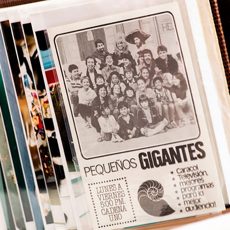
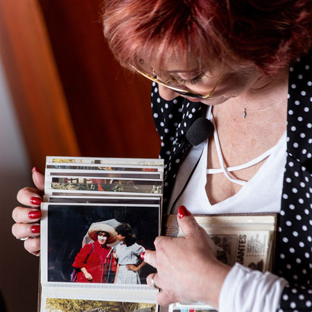
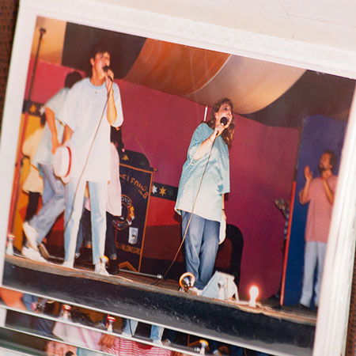
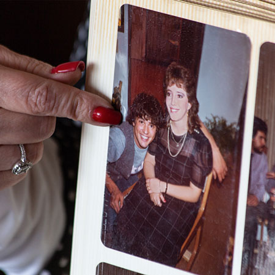
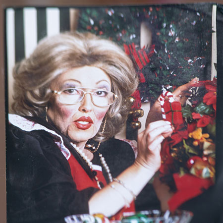
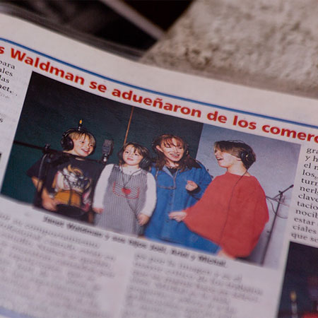
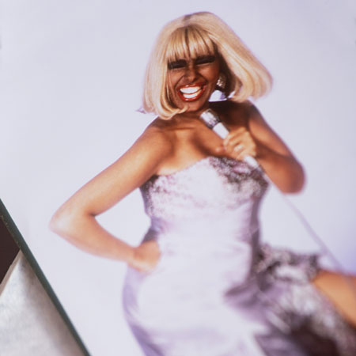
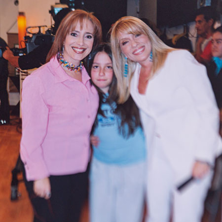
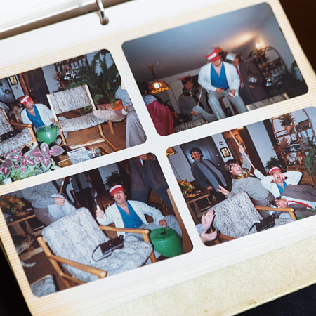

Yaneth Waldman
Por: Jerrika Lozano
 @yanethwaldman
@yanethwaldman
 Yaneth Waldman
Yaneth Waldman
 @YanethWaldman
@YanethWaldman
Ésta actriz, presentadora y cantante colombiana es uno de los personajes con mayor trayectoria en nuestro país con 35 años de carrera artistica hoy nos cuenta a través de nuestra sección Foto Historia un poco de esos momentos que son inolvidables y que gracias a su amor por su profesión guarda con cariño en fotografías que narran una vida llena de magia, amigos y momentos inolvidables.
Yaneth continúa presentando su conferencia La Fe Mueve Montañas, junto a su monólogo No nací para sufrir en Comedia a la Carta, el festival más grande de Colombia y Latinoamérica este próximo 25 de agosto en San Isidro en el Pórtico, donde estará participando una gran cuota femenina, junto a varios venezolanos entre ellos, Emilio Lovera.
- Pequeños Gigantes es la primera experiencia de ésta actriz en 1982 y trascurren 8 años en este proyecto, en compañía de Carlos Vives, Israel Sanchez, Roberto Cano, Fernando Garavito, El Chatico La Torre.
- Yaneth ha hecho de buena, mala, bruja, hada, marinera, un sinfin de personajes que la formaron como actriz.
- Durante sus embarazos continuaba realizando lo que le apasiona, con el embarazo de su primer hijo Joel trabajó hasta dos días antes del parto, con su segundo hijo Ariel trabajó sin descansar y con su hija Michal inició grabaciones cinco días después de dar a luz. “Asi de loca soy”.
- Las rumbas sanas, cantar y bailar eran el plan favorito, con las ollas de cocina improvisaban una batería, Carlos Vives con apenas 20 años no se perdía estas fiestas.
- Magolita, un personaje que Yaneth no olvida. El trabajo de maquillaje tomaba alrededor de dos horas y media para lograr en cada grabación este maravilloso personaje.
- Sus hijos han demostrado ser histriónicos desde pequeños por lo que fueron voces institucionales de diferentes marcas, cantaron jingles y eran buscados por su talento, tanto así que su agenda estaba copada.
- En 1994 en el programa Exitosos, mostró por primera vez su imitación de la cantante Celia Cruz, para luego ser invitada al noticiero QAP. Cuando la cantante vió a este personaje le regaló su vestido.
- Mientras participaba como presentadora en Muy Buenos Días tuvo la oportunidad de conocer a la actriz y cantante mexicana Yuri en el año 2002 junto a su hija Michal.
- 